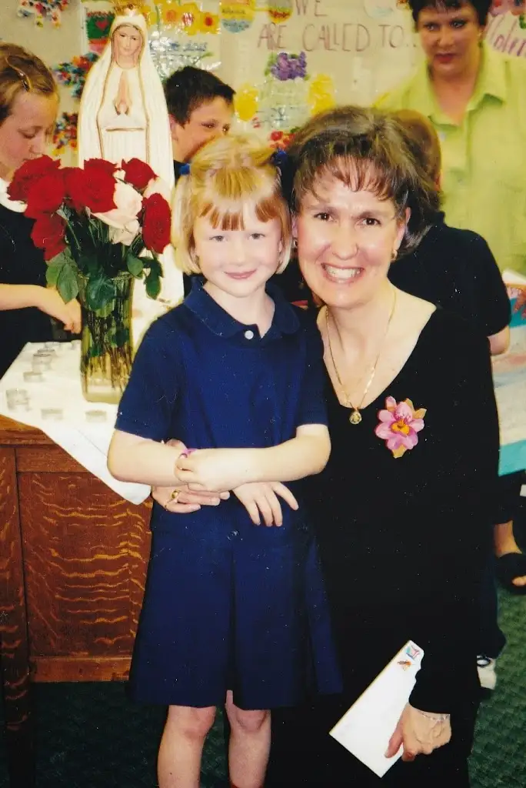

[For the sake of having a repository for my newspaper columns and articles, and allowing a second chance for those who missed them the first time, I reprint them here, with permission. The following was originally printed in The Forum newspaper on May 10, 2014. Rather than the photos that were submitted and used in this piece, however, I am including one that was left out that highlights the main subject and one of her young students at the conclusion of the tea in 2001.]
{kind=link}
Faith Conversations: Mother’s Day tea meaningful event for parents, children
By Roxane B. Salonen
 |
| Jean Eppler and Sara Nistler, Mother’s Day Tea 2001 |
{kind=link}
FARGO – A colleague from her days teaching in Sioux Falls, S.D., first gave Jean Eppler the idea, but it’s evolved into something mothers who’ve experienced it have a hard time explaining without getting choked up.
“It was like time stood still; like I was stepping into a different world – a time when motherhood was so revered and precious,” says Linda Morris, now of Boise, Idaho.
Morris’ son, Griffin, now 21, was among the first crop of first-graders to help host the Mother’s Day Tea, an event that has been taking place in Eppler’s classroom at Nativity Elementary in Fargo every May for the past 20 years.
“The essence and the incredible dignity of being a mother was captured in that little room, and it definitely touched your heart and stayed with you,” Morris adds. “The effects of it left a mark that I can still feel to this day.”
The event – which usually happens the Friday before Mother’s Day – involves a candlelight ceremony led by the students dressed in their Sunday best.
Mothers sit in chairs in a circle surrounding the children, and the children sit or stand in the middle.
In atypical first-grade fashion, their postures and expressions are serious and reverent.
Along with prayers and other offerings, the children recite the song, “Mary Did You Know?” in sign language, and place roses, one by one, into a vase at the base of a tabletop statue of Mary – a symbolic gesture of what some Christians refer to as the “May crowning,” an annual tribute to Jesus’ mother.
When the lights come on, the children serve their mothers tea and cider, along with delicate, heart-shaped cookies, from a sterling silver tea set; shower them with handmade gifts; then hunker down together to a watch a slideshow depicting their entire school year – including plenty of first-lost-tooth poses.
Unbeknownst to the kids, Eppler begins preparing quietly for this day back in August.
“It’s a big commitment. And I don’t do anything else the week leading up it,” she says. “My own children have never experienced it, but they’ll come home now as adults when I’m rolling out the sugar cookies and say, ‘Oh, it’s the Mother’s Day Tea.’ And they’ll get just as excited as I do.”
During those final days of preparation, her husband, Cray, watches the slideshow with her at home, and it never fails to affect him.
“He just sits and bawls,” she says. “He’ll say, ‘I don’t even know these kids but this is making me cry.’ It’s really become a family affair for us.”
The first tea – a May sorrow
When asked about her very first tea, Eppler pauses, then brings forth a memory she’d nearly forgotten.
“I actually missed the first one,” she says, recalling the phone call she’d received from her brother-in-law at school that morning of May 5, 1994. “He was crying, and he said, ‘Jean, your dad just died.’ ”
Tom Dooher, 74, had been in a car accident and was recovering from hip surgery, eating his morning toast, when a blood clot raced to his lungs.
At the news, Eppler dashed off to the hospital, leaving her well-laid preparations for the afternoon’s special event in her wake.
With the help of Principal Cindy Hutchins and the mothers, the tea still happened. One told her later that everyone cried and prayed through it, knowing what Eppler was experiencing.
Her own mother, Frances, died when Eppler was only 10. From that point on, she says, she began leaning on her spiritual mother, Mary, in times of loneliness, sorrow and even joy.
“It was like I took Mary as my mother,” she says. “I remember telling her how much I missed my mom and feeling that love from her. It’s supernatural – it can’t be explained – but I’d have to say now it was a gift given to me to be able to go on, and I always knew God was going to use it for something good.”
Years later, the good became apparent when several of Eppler’s young students lost their mothers.
“They said, ‘This is easier for me because I know you’ve lost your mom and I have a mom that’s going to die, too.’ ”
The sacred cloaked in a lesson
Perhaps that partly explains Eppler’s tireless setup efforts, not to mention her high regard for motherhood.
Certainly, there’s the goal of helping children learn manners, but, according to Morris, in the sacred simplicity it also becomes about so much more – namely, the deep and abiding love of mother and child.
Though Brenda Nistler’s three daughters are well past first grade now, she returns yearly to help Eppler set up and serve.
“I can honestly say every year around the beginning of April, there’s a little skip in my heart thinking about the tea,” Nistler says. “Mrs. Eppler infused our family with love and faith. It started in the classroom and came home, and the tea was part of that.”
Judy Kubalak says she didn’t know what to expect the first year she received an invitation to the tea, but when her daughter greeted her in the hallway holding out a rose, she melted.
“I remember the excitement in Summer’s eyes over what they were going to do and it just lit me up,” she says. “I’d been so busy earlier that day, getting ready to leave town, and once I was there I just wanted to stay.”
Summer Miranda, 10, has her own memories of that day in first grade, including seeing some student helpers bringing boxes of tissues into Mrs. Eppler’s classroom that morning. “I also remember spilling cider on my mom,” she says, giggling.
But Eppler’s memories are perhaps the richest and most varied since for 20 years straight, she’s been witness to the love and learning that has transpired.
“Through this event, the kids learn more about life experience than they can in any textbook,” she says. “It’s a lot of work, but you set out to make it beautiful, and every year when it’s over, I go home, pour myself a glass of wine and put up my feet.”
It’s the kind of exhale every mother deserves from time to time – perhaps especially on this Mother’s Day weekend.